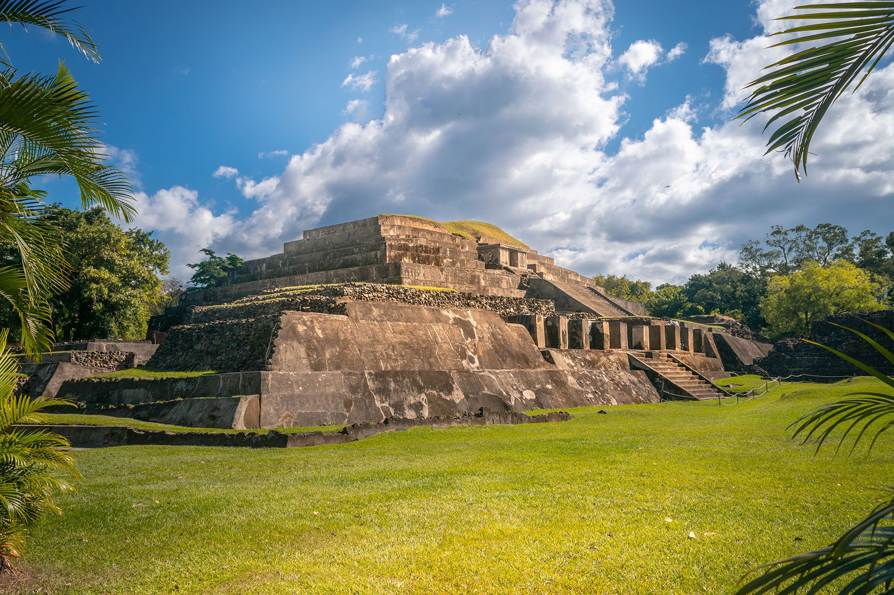

Mayan Civilization
The ancient Mayans lived in El Salvador long before the Spanish arrived, leaving behind impressive ruins and cultural traditions.
Colonial Era
El Salvador was colonized by Spain in the 16th century. Colonial architecture and historical towns still exist today.

Independence
El Salvador gained independence from Spain in 1821 and later became part of the United Provinces of Central America.